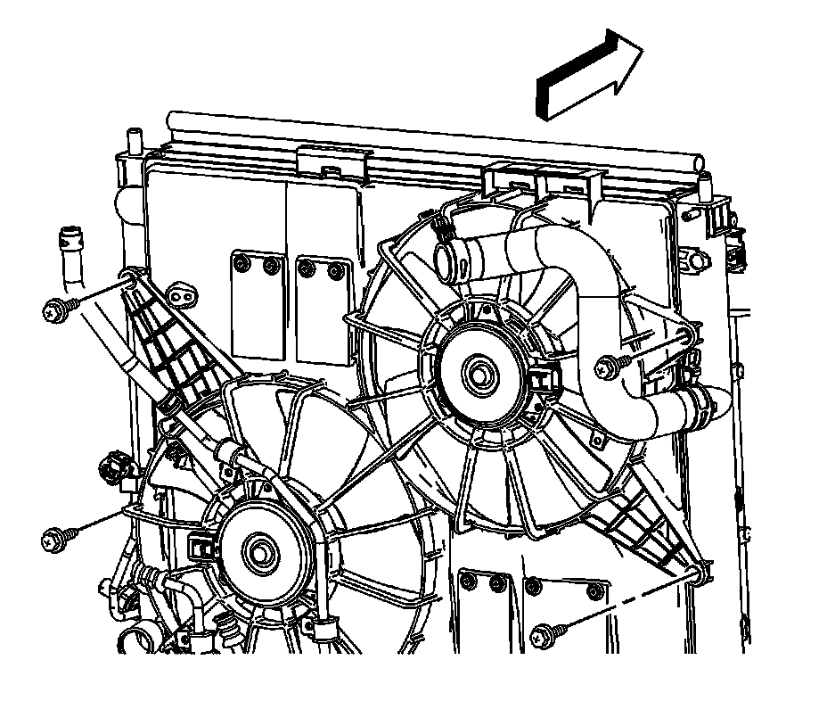
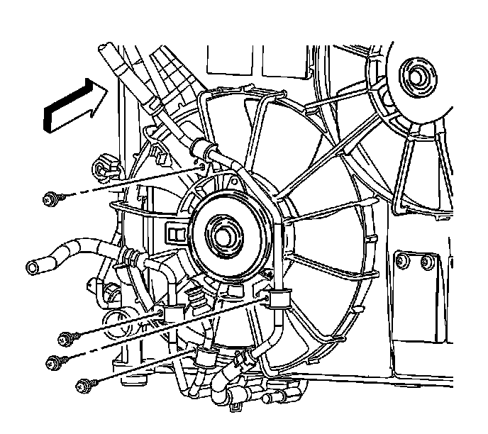
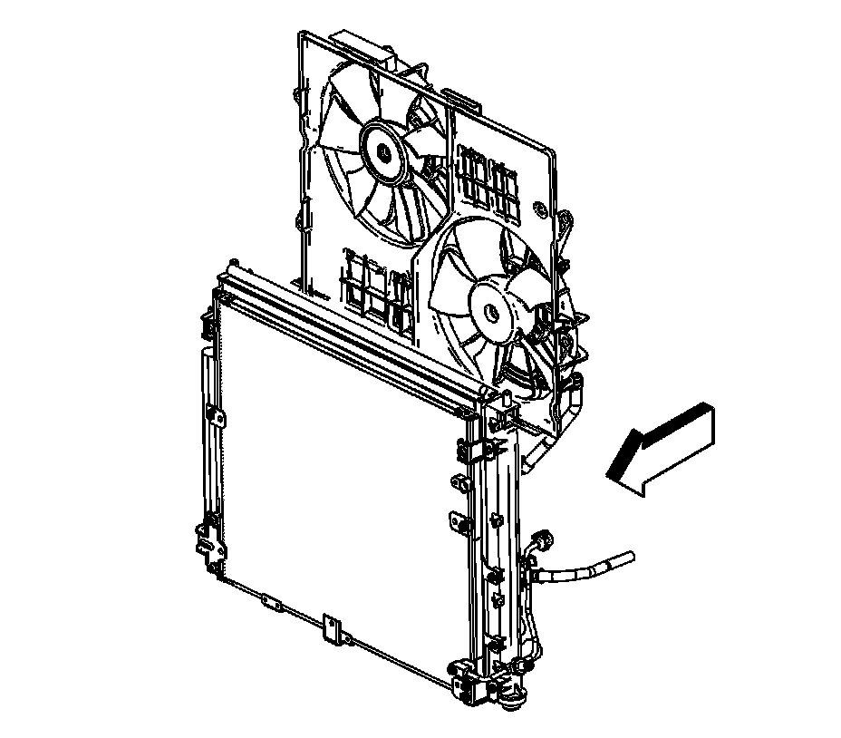

Air Conditioning Compressor Replacement (Standard Cooling)
Compressor Replacement (LH2 - Standard Cooling)
Tools Required
J 39400-A Halogen Leak Detector
Removal Procedure

1. Recover the refrigerant. Refer to Refrigerant Recovery and Recharging (Refrigerant Recovery and Recharging) .
2. Remove the air cleaner outlet duct. Refer to Air Cleaner Outlet Duct Replacement (Service and Repair) .
3. Remove the drive belt. Refer to Water Pump and Air Conditioning Compressor and Power Steering Pump Belt Replacement (Water Pump and Air Conditioning Compressor and Power Steering Pump Belt Replacement) .
4. Disconnect the cooling fan electrical connectors.
5. Disengage the surge tank inlet hose from the retaining features on the cooling fan shroud and reposition aside.
6. Remove the cooling fan shroud to radiator retaining bolts.

7. Remove power steering line to cooling fan shroud retaining bolts.
8. Disconnect the A/C line from the cooling fan shroud retainer clip.
9. Raise and support the vehicle. Refer to Lifting and Jacking the Vehicle (Service and Repair) .

10. Remove the front air deflector retainers.
11. Remove the front air deflector.

12. Disconnect the engine wiring harness from the engine frame and reposition.
13. Remove the transmission oil cooler lines to cooling fan shroud retaining bolts.

14. Remove the LH front wheel. Refer to Tire and Wheel Removal and Installation (Service and Repair) .
15. Remove the LH front splash shield retainers.
16. Remove the LH front splash shield (1).

17. Remove the suction line bolt from the A/C compressor.
18. Disconnect the suction line from the A/C compressor.
19. Remove and discard the O-ring.

20. Remove the discharge line bolt from the A/C compressor.
21. Disconnect the discharge line from the A/C compressor.
22. Remove and discard the O-ring.
23. Disconnect the A/C compressor electrical connector.
24. Remove the engine oil filter. Refer to Engine Oil and Oil Filter Replacement (Service and Repair) .
25. Remove the A/C compressor mounting bolts.

26. Lower the vehicle.
27. Remove the cooling fan assembly.
28. Remove the A/C compressor.
29. Replace the desiccant bag if the following conditions exist. Refer to Air Conditioning Refrigerant Desiccant Replacement (Service and Repair) .
* Color of PAG oil is brown or black
* Presence of foreign substances
Important: Replacement A/C compressors are charged with PAG oil. Refer to Refrigerant System Capacities ([1][2]Capacity Specifications) .
30. If replacing the A/C compressor, balance the compressor. Refer to Compressor Oil Balancing (Service and Repair) .
Installation Procedure
1. Install the A/C compressor.
2. Install the cooling fan assembly.
3. Raise the vehicle.
Notice: Refer to Fastener Notice (Fastener Notice) .
Important: Do not tighten the A/C compressor mounting bolts until all bolts are thoroughly started.
4. Install the A/C compressor mounting bolts.
Tighten the bolts to 25 N.m (18 lb ft).
5. Install the engine oil filter. Refer to Engine Oil and Oil Filter Replacement (Service and Repair) .
6. Connect the A/C compressor electrical connector.
7. Install a new O-ring to the discharge line. Refer to O-Ring Replacement (Service and Repair) .
8. Connect the discharge line to the A/C compressor.
9. Install the discharge line bolt to the A/C compressor.
Tighten the bolt to 9 N.m (80 lb in).
10. Install a new O-ring to the suction line. Refer to O-Ring Replacement (Service and Repair) .
11. Connect the suction line to the A/C compressor.
12. Install the suction line bolt to the A/C compressor.
Tighten the bolt to 9 N.m (80 lb in).
13. Install the LH front splash shield (1).
14. Install the LH front splash shield retainers.
15. Install the LH front wheel. Refer to Tire and Wheel Removal and Installation (Service and Repair) .
16. Install the transmission oil cooler lines to cooling fan shroud retaining bolts.
Tighten the bolts to 6.5 N.m (58 lb in).
17. Connect the engine wiring harness to the engine frame.
18. Install the front air deflector.
19. Install the front air deflector retainers.
20. Lower the vehicle.
21. Connect the A/C line to the cooling fan shroud retainer clip.
22. Install power steering line to cooling fan shroud retaining bolts.
Tighten the bolts to 6.5 N.m (58 lb in).
23. Install the cooling fan shroud to radiator retaining bolts.
Tighten the bolts to 6.5 N.m (58 lb in).
24. Connect the cooling fan electrical connectors.
25. Engage the surge tank inlet hose to the retaining features on the cooling fan shroud.
26. Install the drive belt. Refer to Water Pump and Air Conditioning Compressor and Power Steering Pump Belt Replacement (Water Pump and Air Conditioning Compressor and Power Steering Pump Belt Replacement) .
27. Install the air cleaner outlet duct. Refer to Air Cleaner Outlet Duct Replacement (Service and Repair) .
28. Evacuate and recharge the A/C system. Refer to Refrigerant Recovery and Recharging (Refrigerant Recovery and Recharging) .
29. Leak test the fittings of the component using the J 39400-A .